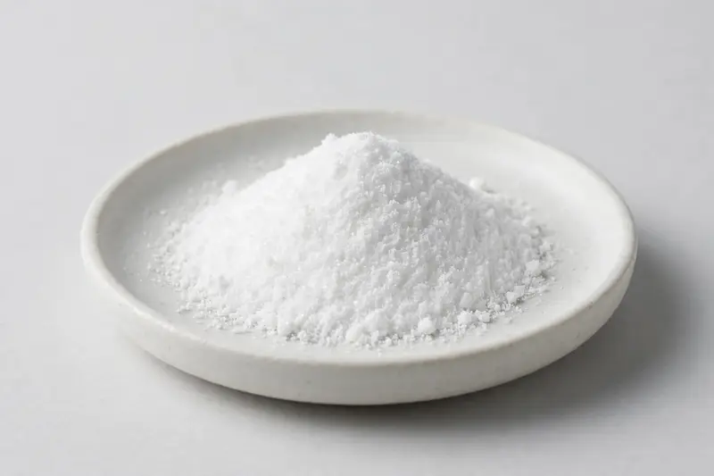

Vitamin B3 niacinamide powder, commonly requested at 99% grade, for cosmetic and supplement formulation.

Overview
Niacinamide powder, the amide form of vitamin B3, is a widely used ingredient across both cosmetic and supplement formulation, with buyers most often requesting a 99% grade. It is favored for its straightforward water solubility and compatibility with many base systems. As a Xi'an-based trading company we source through partner producers rather than operating our own plant, so purity grade and testing detail are confirmed after we review your target specification.
Specifications below reflect commonly requested options in the market — not a stock list. Share your target spec and we'll confirm exactly what we can supply, honestly.
| Specification | Details |
|---|---|
| Botanical identity | Niacinamide powder, 99% grade, cosmetic- and supplement-grade |
| Marker compound | Commonly requested spec grades: 99% assay by HPLC or titration; actual specs confirmed on inquiry |
| Appearance | White fine powder |
| Analytical methods | Methods referenced in buyer specifications: HPLC, titration |
| Mesh size | Typically 80–100 mesh (confirm per inquiry) |
| Testing | COA/TDS arranged on request; scope agreed per your spec |
Applications
Documentation
We don't claim in-house labs or certifications we don't hold. COA and TDS documents can be arranged on request, and testing scope is agreed against your specification before supply.
FAQ
Related products
Morus alba
Key marker: DNJ 1%
View specs →Citrus aurantium
Key marker: Synephrine 6-10%
View specs →Sodium hyaluronate (fermentation-derived)
Key marker: Cosmetic & food grades
View specs →kojic acid (5-hydroxy-2-(hydroxymethyl)-4-pyrone)
Key marker: Assay (99%)
View specs →zinc picolinate
Key marker: Zinc Content
View specs →Send your target spec and volumes — we'll respond with a tailored quotation.
Request a Quote